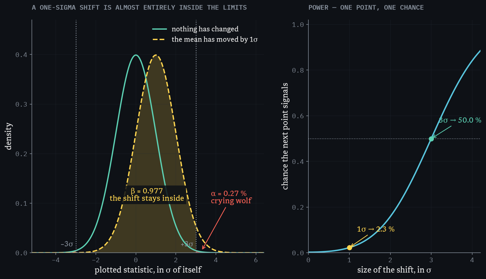
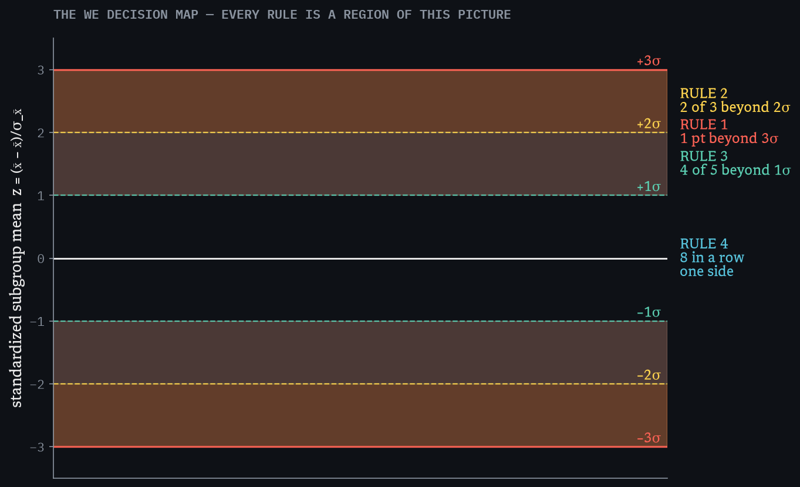
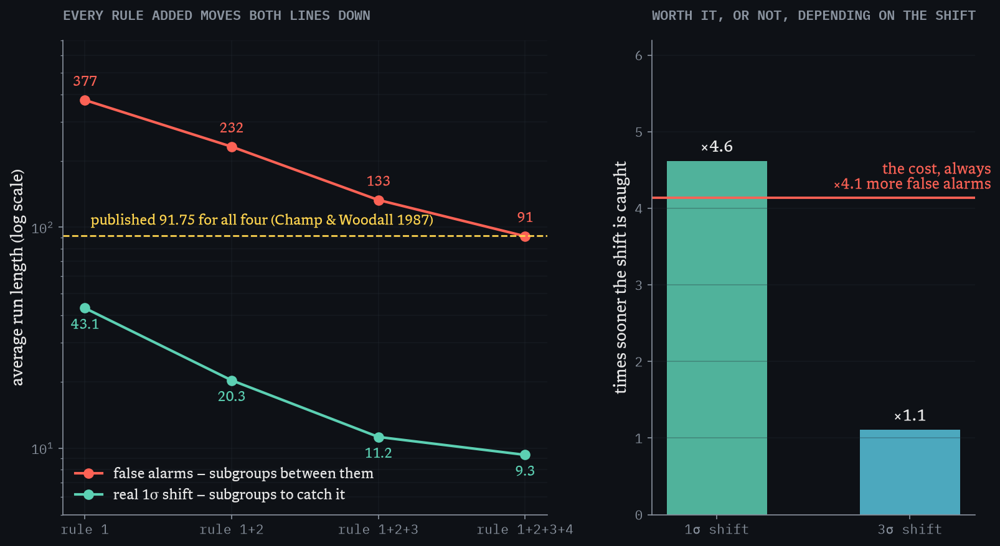

Level 7 · chapter seven
Evidence and decisions
Level 6 priced crying wolf. This is the other way to be wrong — and why adding rules is arithmetic rather than opinion.
after Level 6 — limits are a hypothesis test·leads to Level 8 — capability
- 7.1The other way to be wrongα is crying wolf; β is staying silent, and nobody counts it
- 7.2Powerone point, one chance — and how small a chance
- 7.3The chart throws evidence awaya verdict is not the same as a p-value
- 7.4Four rules, one at a timeeach rule priced, against a figure published in 1987
- 7.5So is it worth itthe cost is fixed; the benefit is the shift you fear
- 7.6Which rule set earns its false alarms hereone masked line, three prices, one decision
The other way to be wrong
Level 6 priced one decision: a point outside three sigma. αCrying wolf. Priced in Level 6, and the only error a three-sigma limit is chosen against.It costs 0.27 % of subgroups a false alarm, and Level 2 turned that rate into one alarm in 370. What neither level mentioned is the other way a chart can be wrong — staying silent when the process really has moved.
Draw the shifted process against the same limits and the problem is visible before it is named. two ways to be wrongα, crying wolf0.27 %β at 1σ0.977so it is caught2.3 %A mean that has moved by a full sigma sits almost entirely inside them.
So the chance of catching that shift on the next point is 2.3 %. spoken · 0:48“That is the error Level 6 never mentioned, and it is the bigger one.”The chart is not broken. A one-sigma shift simply looks like ordinary noise to a test that only ever sees one point at a time — and this is the bigger of the two errors, because nobody is counting it.

Stage 1 of 4 · predict
Power
Put a number on it at every shift size and you have the power curve: the chance that one point sees a shift of a given size. chance the next point signals0.5σ0.6 %1.0σ2.3 %2.0σ15.9 %3.0σ50.0 %It is worth reading slowly, because it is unflattering.
The chance the next point falls outside ±k sigma when the mean has moved by delta. Both tails, because a chart does not know which way the process went. At delta = 0 this is the false-alarm rate; at delta = k it is exactly one half.
At two sigma it is 15.9 %. why exactly a halfAt one tail contributes almost nothing and the other contributes .It takes a shift of three full sigma — the mean landing exactly on the limit — before the next point is even a coin toss, and that is not a coincidence: when the mean sits on the limit, half the distribution is on each side of it.
One point, one chance. spoken · 1:36“One point, one chance. That is the whole limitation.”Everything the extra rules do is an attempt to get around that single sentence.
Stage 2 of 4 · watch Act A
Act A transcript · six shots
A1, the line that will not move. One process distribution and one three-sigma boundary are drawn and then left alone for the whole act. Everything that follows is an area measured against that same line.
A2, two areas, then two letters. The distribution is copied and slid one sigma to the right. The tail outside the boundary on the unmoved curve is 0.27 % of subgroups; the part of the shifted curve still inside the boundary is 97.7 %. Only after both areas are on screen are they named α and β.
A3, sweeping the shift, watching the area. The shifted curve walks across the boundary and the caught area grows with it: 2.3 % at one sigma, 15.9 % at two, 50.0 % when the mean lands on the limit. The limit is then dragged in to two sigma, and the false-alarm area fattens by exactly as much as the missed area thins.
A4, one point, two answers. A single subgroup lands at two and a half sigma. The chart returns a verdict, in control, and the same point returns a p-value of 0.0124. Two objects, not two labels on one number.
A5, the cost board, three stops. The rules switch on one at a time and both run lengths shorten together: a false alarm every 377 subgroups becomes every 91, while the wait to catch a 1σ shift falls from 43.1 subgroups to 9.3.
A6, same purchase, different shift. The false-alarm rate is held still and the shift is moved to 3σ. The catch bar barely moves: 2.0 subgroups against 1.8. The price was the same and almost nothing was bought, which is the question Act B answers on a real line.
The chart throws evidence away
Consider a point at two and a half sigma. p-value, two-sidedpoint at 2.5σ0.0124point at 3.0σ0.0027the chart's verdictin controlIt is inside the limits, so the chart calls it in control and moves on. Ask instead how surprising it is, and the answer is a p-value of 0.0124 — about one in eighty.
Anywhere else in statistics that is a finding. the same number twiceA point exactly on the limit has a p-value equal to α. The chart is a test with its threshold already chosen.Here it is filed as a pass and forgotten, because the in-or-out rule keeps the verdict and discards the evidence.
A verdict is not the same as the evidence. The extra rules exist to spend what a single point cannot hold — a pattern across several points, none of which is damning on its own.
Four rules, one at a time
The Western Electric rules are usually taught as a list to memorise. what each rule readsrule 1one point beyond 3σrule 22 of 3 beyond 2σ, same siderule 34 of 5 beyond 1σ, same siderule 48 in a row on one sideThey are not a list. They are four purchases, and each one has a price that can be computed.
Switch them on one at a time and watch two run lengths move in the same direction — the subgroups between false alarms, which you want long, and the subgroups to catch a real 1σ shift, which you want short. false alarm every / catches inrule 1377 / 43.1rule 1+2232 / 20.3rule 1+2+3133 / 11.2rule 1+2+3+491 / 9.3Every rule shortens both.
All four together give a false alarm every 91 subgroups instead of 377. corroborationChamp & Woodall, 1987. Agreement with a number derived elsewhere is worth more than internal consistency.That figure was published in 1987 as 91.75, and the simulation here was not told about it — it reproduces it from the rules themselves.

So is it worth it
Line up what the rules cost against what they buy, and the answer stops being a matter of taste.all four rulescost, always×4.1 false alarmsbought at 1σ×4.6 soonerbought at 3σ×1.1 sooner
Against a slow one-sigma drift the rules catch it ×4.6 sooner — more than the ×4.1 in false alarms they cost, so the trade is good. read it twiceThe cost is one number. The benefit is a function of the shift, and the shift is a fact about your process.Against a three-sigma jump they catch it only ×1.1 sooner, because rule one already sees it on the next point. Same cost, almost nothing bought.
So the rules are not good or bad, and the argument about whether to use them is not really about statistics. spoken · 3:44“The cost is fixed. The benefit is the shift you fear.”The cost is fixed; the benefit is whatever shift you are actually afraid of. Level 9 asks the same question of a chart with memory, and gets a better answer.

Which rule set earns its false alarms here
That answer is still one step short of a decision. one masked line, pricedrule 11806.51rules 1 + 21002.48all four740.24The cost of a rule is fixed and its benefit is the shift you fear, but a plant does not buy shifts — it buys minutes of scrap and hours of stopped line. Four facts turn the trade into money: how far the mean moves when it moves, what one unnecessary stop costs, what a minute of unseen drift costs, and how long the wait between subgroups is.
Act B states those four facts for one masked line, prices all three rule sets from them, and then moves exactly one of the four. Nothing about the rules changes and the cheapest rule set changes anyway, which is the whole claim: the answer is a property of the line.
What follows is optional. nothing is gatedSkip it and the chapter is unchanged. Passing writes one entry in this browser and nowhere else.It serves one case the acts never show, and it asks for both halves of the decision — the rule set, and which of the four stated facts made it the cheapest. Repeating the totals above cannot pass, because the case underneath them is a different line.
Stage 3 of 4 · watch Act B
Act B transcript · five shots
B1, four facts, built before they are named. One masked line runs as a strip of subgroups. The four things the plant knows are drawn as objects first and labelled second: how far the mean moves when it moves, what a stop costs, what a minute of unseen drift costs, and how far apart the subgroups are.
B2, commit before the prices. Three plates appear, one per rule set, and the act asks for a choice while all three are still empty. Nothing on screen favours one yet.
B3, three prices out of one case. Each plate is filled from the same strip: the alarms it would raise, priced per event, stacked on the minutes it would wait, priced per minute. On this case that is 1806.51 for Rule 1 only, 1002.48 for Rules 1 + 2 and 740.24 for All four Western Electric rules. The plate with the smallest alarm bill is not the winner.
B4, move one line of the case. Every fact is held except the expected shift size, which moves to 3 sigma. The purchase price of each rule set does not move, and the winner walks from All four Western Electric rules to Rule 1 only. The answer was never a property of the rules.
B5, what the next shift does. The act closes on the action a supervisor takes on this line, not on a restatement of the arithmetic.
Stage 4 of 4 · decide on unseen data
After the decision
Use this when…
Buy the extra rules when the shift you are afraid of is small, when one stop for a check costs less than the minutes a drift runs unseen, and when subgroups are far enough apart that every subgroup of delay is expensive. Stay on rule 1 when the fault you plan for is large, when a stop is the expensive event on the line, or when you sample fast enough that the next point arrives before the damage does.
Nothing here is a house rule. The three totals under Evidence are the answer for the line in front of you, and they move when the line does.
Evidence
- Priced by spclab.level07_mastery: challenge_case(seed) states the case, expected_cost() prices each rule set, and neutral_case() proves the named field is the one that decides it.
- Case seed —, from a bank of 12.
- Checked by test_level07_mastery.py, which reprices every case, and test_level07_page.py, which reads this page and compares what it serves against the module.